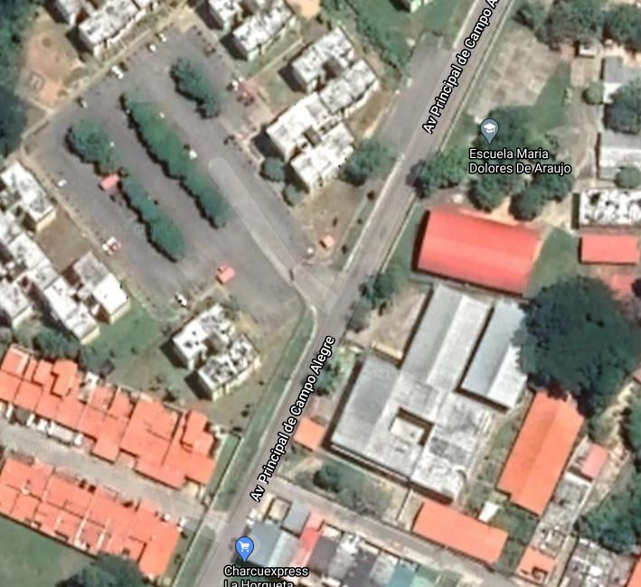

UBICACIÓN GEOGRÁFICA
Límites de acceso:
►Norte: Con los Municipios Motatan y Pampanito.
►Sur: Con los Municipios Urdaneta y Valera.
►Este: Con el Río Jiménez y los Municipios Urdaneta, Trujillo y Pampanito.
►Oeste: Con el Río Motatan y los Municipios Motatan y Valera.
Ubicación de las coordenadas geográficas de la institución:
►Latitud: 09º 19’17’’ N Longitud 070º 35’16’’ O Altitud 642 msnm.
►Vías de acceso: Carretera asfaltada.
►Zona geográfica: Venezuela, Estado Trujillo, Municipio San Rafaél de Carvajal, Parroquia Carvajal, Sector La Orqueta.
►Clima: Temperatura Media: 24°
►Relieve: Montaña, tiene una altura de 657 m.s.n.m.
►Superficie: 84 Km2.
►Distribución Geográfica: El municipio San Rafael se encuentra dividido por cuatro parroquias, entre ellas: Carvajal (capital), Antonio Nicolás Briceño, Campo Alegre y José Leonardo Suárez.
►Hidrografía: Está limitado por una línea recta en dirección este, flanco que finaliza en el río Jiménez, río Motatan y la quebrada aguas negras.
►Aspectos demográficos: Densidad de la población 574,23.